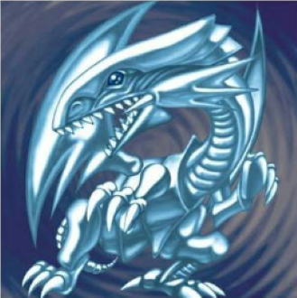
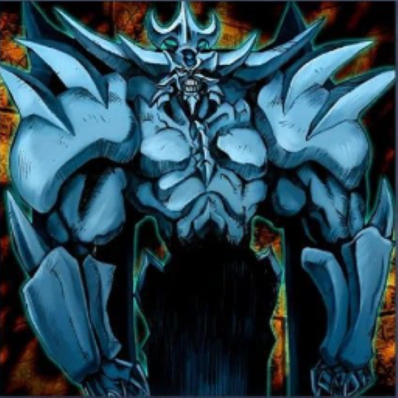
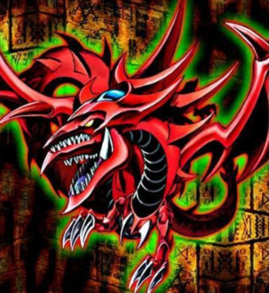
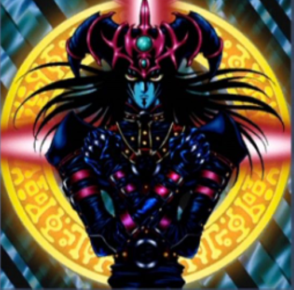
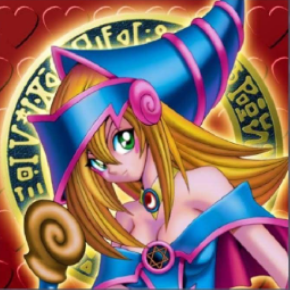

-
Mago Negro

Este lendário mago é habilidoso em ataques e feitiços. Como o maior mestre das artes mágicas, sua força reside tanto no poder quanto na estratégia que ele traz para o campo de batalha.
ATK/ 2500 DEF/ 2100 -
Dragão branco de olhos azuis
Este dragão lendário é uma criatura de poder incomparável, símbolo de força e majestade. Com um ataque devastador, ele é o pesadelo de qualquer oponente. Seus olhos brilhantes e sua presença imponente intimidam até os duelistas mais experientes.
ATK/ 3000 DEF/ 2500 -
O Dragão Alado de Rá

Esta carta não pode ser Invocada por Invocação-Especial. Para Invocar este card, você deve oferecer como Tributo 3 monstros no seu lado do campo. O ATK e a DEF desta carta tornam-se iguais ao total dos ATK e DEF dos monstros oferecidos como Tributo para sua Invocação. Você pode pagar 1000 LP para destruir 1 monstro no campo. Você também pode pagar todos os seus LP, exceto 100, para aumentar o ATK/DEF desta carta pela quantidade de LP pagos.
ATK/ ? DEF/ ? -
Obelisco, o Atormentador
Requer 3 Tributos para ser Invocado por Invocação-Normal (não pode ser Baixado). Não pode ser Invocado por Invocação-Especial. Nenhum jogador pode ativar cards ou efeitos em resposta à ativação deste card. Você pode oferecer como Tributo 2 monstros para destruir todos os monstros que seu oponente controla. Este card não pode ser escolhido como alvo de efeitos de card e é destruído durante a Fase Final do turno em que foi Invocado por Invocação-Normal.
ATK/ 4000 DEF/ 4000 -
Slifer, o Dragão Celeste
Requer 3 Tributos para ser Invocado por Invocação-Normal (não pode ser Baixado). Não pode ser Invocado por Invocação-Especial. O ATK e a DEF deste card são iguais ao número de cards na sua mão x 1000. Se um monstro for Invocado no lado do campo do seu oponente em Posição de Ataque: Esse monstro perde 2000 de ATK e, se o ATK dele for reduzido a 0 como resultado, destrua-o. Nenhum jogador pode ativar cards ou efeitos em resposta à ativação deste card.
ATK/ X000 DEF/ X000 -
Mago do Caos das Trevas
Um mago lendário que domina as forças do caos. Seu poder é superado apenas por sua habilidade em manipular as trevas.
ATK/ 2800 DEF/ 2600 -
Pequena Maga Negra
Ela é a aprendiz do Mago Negro e demonstra grande potencial com seus poderes mágicos.
ATK/ 2000 DEF/ 1700